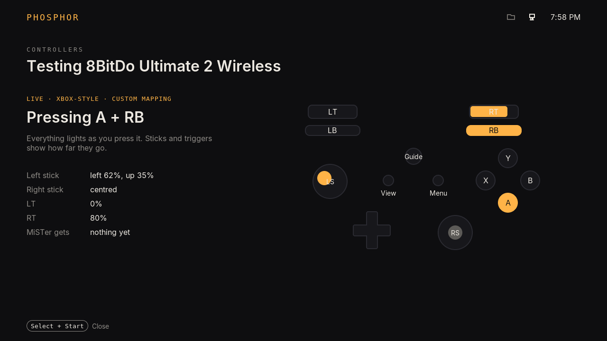
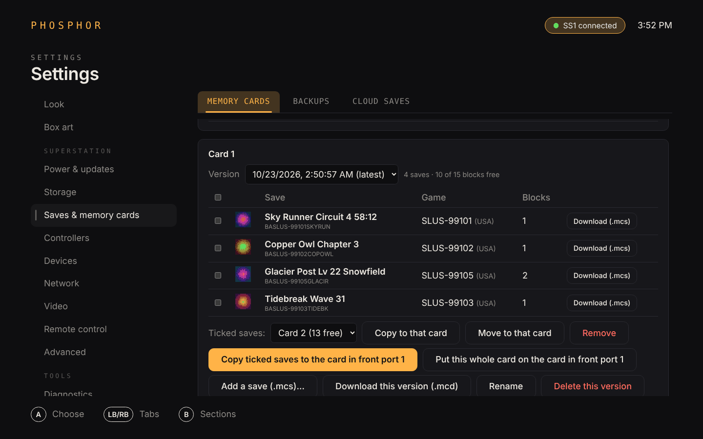
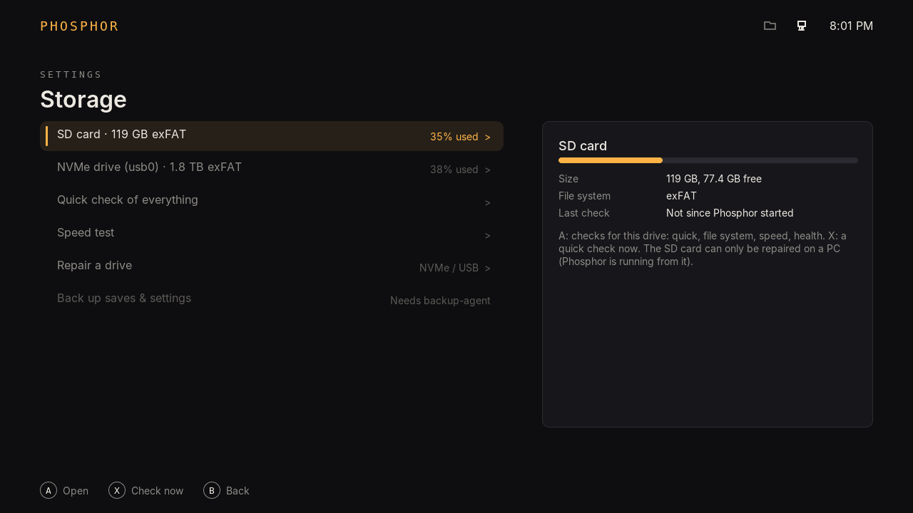
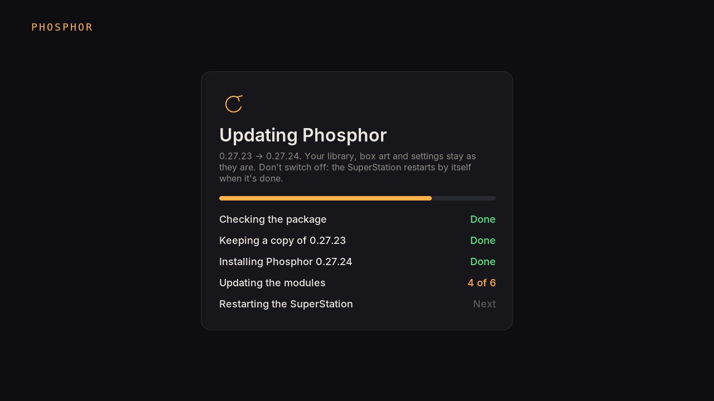
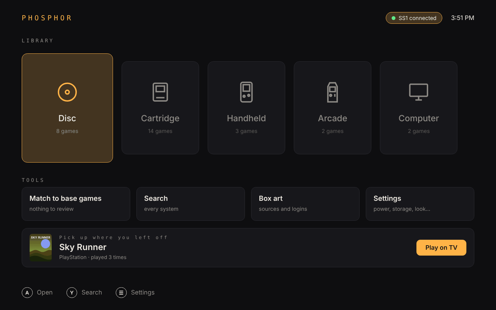

Your MiSTer, as a console.
Phosphor is unofficial custom firmware for the SuperStation One, built on mainline MiSTer and its Linux. Pick up a controller and your games are there with box art, ready to play. Memory cards, Bluetooth, WiFi and saves are a few button presses away, on the TV or from your PC.
Download the beta0.27.24 · SD card image, update and Windows app

Everything from the couch
These are real screens, drawn by Phosphor's own code at 1280 by 720 (on a 1080p TV it draws every pixel at 1080p), and two from Phosphor for Windows. The games and box art are made up for the pictures.

Your library, found for you
Phosphor finds the games on the SD card, a USB drive, NVMe or a network share, works out what each one is, and fetches box art and details from sources you choose.
Hacks and translations can point at the game they're based on and share its art.

Controllers, mapped and tested
Every USB and Bluetooth controller is listed with a drawing that matches it: Xbox, PlayStation, Switch, Saturn, arcade sticks and leverless layouts.
Map buttons and sticks the way MiSTer does, then open the tester and watch each press light up on the drawing. Mappings are backed up before every change and can be put back to automatic.

Memory cards, save by save
Back up the PlayStation memory cards in the front ports into a library on the SD card, one version per backup. Copy or move single saves between cards, download them for an emulator, and put a whole card back.
The card is always backed up before anything is written. The ports are only read while you're using them; the rest of the time they belong to your games.

Bluetooth and WiFi without a keyboard
Pair a controller by putting it in pairing mode. Join a network with the on-screen keyboard. Both use MiSTer's own setup, so nothing is set up twice.

Settings that explain themselves
Move down the list and the panel beside it follows: what each setting is set to right now, and what it's for, in plain words.
Each status is asked for once, when you stop on a row. Nothing is polled while you look.

Saves kept safe
Backups of saves and settings on the SD card, NVMe or your NAS, taken when you leave a game and once a day. Cloud saves to your own WebDAV, SFTP, SMB, Google Drive, Dropbox or OneDrive, shared between MiSTers if you like.

Drives you can check
See how full the SD card, NVMe and USB drives are, and check them from the couch: a quick check, whether Windows will complain about the card, a speed test, the NVMe drive's own health report, and a file system repair for NVMe and USB drives.
Checks only read, except the speed test and repair, which say so first.

Updates you can watch, and undo
Copy an update to the SD card, pick it on the TV and press Install. Phosphor keeps a copy of the version you had, shows each step on screen, and restarts the SuperStation by itself when it's done. Going back to the version before is one press.
MiSTer's Update and Update All run exactly as MiSTer runs them, with a restore point saved first, so Main, the menu core and Linux can be rolled back too.

It knows when it's the power
A power adapter that can't keep up resets the MiSTer instantly under load. No crash, no error, no log, so it usually costs an evening of guessing. Phosphor uses that silence: heavy work that never finished, with no normal shutdown in between, means the power went.
After three, it tells you and says what helps. Switching off while idle is never counted. The events in this picture are an example.

Phosphor for Windows
The same library on your PC, paired with a code from the TV. Box art and details are looked up on the PC, which is much faster, then sent to the SuperStation.
Edit details, start a game on the TV, manage memory cards, controllers, drives, network, video filters and MiSTer.ini, and flash or test an SD card. Everything stays on your home network.
Custom firmware on mainline MiSTer
Phosphor follows MiSTer-devel's mainline releases: the same Linux and kernel, kept current the usual way. Its own layers sit above them, and MiSTer's own menu is always one button away.
- MiSTer LinuxStock, from MiSTer-devel, updated the usual way.
- MiSTer Main + Phosphor's APIMiSTer's own program, plus a small local interface so Phosphor can work with it instead of around it.
- Menu core + front portsMiSTer's menu core, plus PlayStation controller and memory card access, off until Phosphor asks.
- phosphord and modulesThe library, box art, backups, cloud saves, restore points and health checks. Each does its work when you ask, not on a timer.
- Phosphor and Phosphor for WindowsWhat you see and hold.
Phosphor's parts. The changes to MiSTer's own programs will be published under the GPL, like MiSTer.
Made with MiSTer, never against it
Phosphor is built to work with the MiSTer community, its hardware and its software. It runs on MiSTer-devel's own Linux and Main, leaves cores, Update All and the community's tools working the way they always have, and keeps MiSTer's own menu one button away. It stands on years of other people's work, listed in the credits.
No tracking, no ads, nothing hidden
Phosphor, Phosphor for Windows and every Phosphor app are free of analytics, ads, spyware and malware. Nothing in them watches what you do.
Nothing collected or shared
There are no Phosphor servers collecting anything. Nothing about you, your games or your system is stored by us, sent to us or shared with anyone.
Your hardware, your data
It's your SuperStation and your files, and you're in control of them at all times. You decide what Phosphor does and where anything goes, and you can change your mind whenever you like.
Nothing happens unless you choose it
Phosphor only goes online when you ask it to, or set it up to: the box art sources you pick, your own storage for cloud saves, and MiSTer's update servers when you run an update.
This website too
No trackers, cookies or analytics, and the fonts are served from here. The download numbers are GitHub's anonymous totals for each file.
How it treats your system
A few rules everything in Phosphor follows.
Your settings stay home
WiFi passwords and Bluetooth pairings live on the SuperStation One, your PC, NVMe or NAS. Never on the internet.
A backup before every change
Anything Phosphor changes is backed up first and can be put back from the same screen.
Only when you press the button
Nothing installs, updates or rewrites itself. Cores are yours to manage. Looking for games and fetching box art start when you choose them.
Quiet in the menu
The DE10-Nano has one small CPU and a modest power budget. Phosphor sleeps between button presses, so the menu idles well under 20% CPU and an update gets the machine to itself.
Plain answers when it goes wrong
Errors say what happened and what to try. Diagnostics checks the whole system and saves one report to share, with passwords taken out.
MiSTer underneath
No replaced kernel, no replaced files. Remove Phosphor and the card is plain MiSTer again.
Download BETA
Phosphor 0.27.24 for the SuperStation One. It's a beta: tested on one SuperStation One, still changing quickly, and some things will break. Phosphor is a working name.
phosphor/uninstall.sh takes Phosphor off again.SD card image
A new card with MiSTer and Phosphor on it. No WiFi or other settings of anyone's on it.
- Write it to a microSD card with balenaEtcher, Raspberry Pi Imager or Rufus. Everything on the card is erased.
- Optional: put a
wpa_supplicant.confon the card's MRFUSION drive for WiFi straight away, or set WiFi up on the TV later. - Put it in the SuperStation One and switch on. The first start sets the card up (a few minutes), then Phosphor starts.
SHA-256 e6739d1491bb01b198071ea83e19387b11cfd63faf2068cc4f5b81366511094e
Update package
Already running Phosphor? This updates it. Your library, box art, saves and settings stay as they are.
- Copy it to
phosphor/updateson the SD card, over the network share or with Phosphor for Windows (Settings › Power & updates › Update Phosphor). - On the TV: Settings › Update Phosphor, choose it, Install. The SuperStation restarts by itself when it's done.
SHA-256 00edcb5a4636e0d7f29024e3fb78fe907d0f88c85e5a8a2f576b6d8435279e91
Phosphor for Windows
The PC companion: the library and box art (looked up on the PC, much faster), memory cards save by save, the SuperStation's settings and tools, and SD card flashing.
- Unzip it and run Phosphor-0.2.16.exe; there's no installer. Windows may warn about an unknown app: More info › Run anyway.
- Pair it with the code the TV shows in Settings › Remote access.
SHA-256 7aaaa6b01fea931fee824172bbeb33c63822e88ebb29f4d4236a849e71f31d6d
Credits
Phosphor builds on the work of these people and projects. Thank you.
MiSTer and its community
- MiSTer FPGA: Alexey Melnikov (Sorgelig) and the MiSTer-devel contributors. MiSTer Main is based on MiST by Till Harbaum, Minimig by Dennis van Weeren and other projects. GPL-3.0.
- MiSTer Main and the menu core: Phosphor's Main and menu core are forks of them. GPL-3.0.
- MiSTer's Linux and kernel, Mr. Fusion, the MiSTer release, Filters, Shadow Masks and Presets: MiSTer-devel, used as they are in the SD card image.
- Update All and Downloader: theypsilon. GPL-3.0.
- SDL_GameControllerDB: the controller list MiSTer uses, read by Phosphor. zlib licence.
Libraries
- LVGL: LVGL Kft and contributors. MIT.
- SQLite: public domain.
- cJSON: Dave Gamble and contributors. MIT.
- libchdr: Romain Tisserand and contributors. BSD-3-Clause. With LZMA SDK (Igor Pavlov, public domain), miniz (MIT) and Zstandard (BSD).
- stb_image: Sean Barrett. Public domain or MIT.
- Go and its golang.org/x packages: The Go Authors. BSD-3-Clause.
- go.bug.st/serial: Cristian Maglie. BSD-3-Clause.
Fonts
- Inter: Rasmus Andersson and the Inter Project Authors. SIL Open Font License 1.1.
- DejaVu Sans Mono: the DejaVu fonts team, based on Bitstream Vera. Bitstream Vera licence.
Both are used on the TV, in the apps and on this site. Font licences.
Game details and box art
- libretro database and libretro thumbnails
- ScreenScraper: game information and media from the ScreenScraper community, under CC BY-NC-SA 4.0. Used with your own screenscraper.fr account.
- TheGamesDB, LaunchBox Games Database, ArcadeDB and IGDB
- Fan-made box art for ROM hacks and homebrew: each cover's maker and where it was posted are listed in Phosphor's fan art list.
Looked up only when you ask, from the sources you turn on.